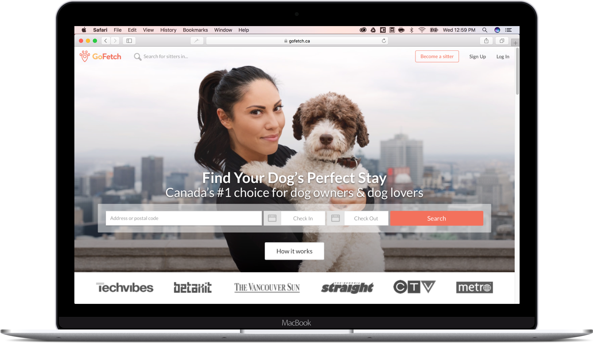
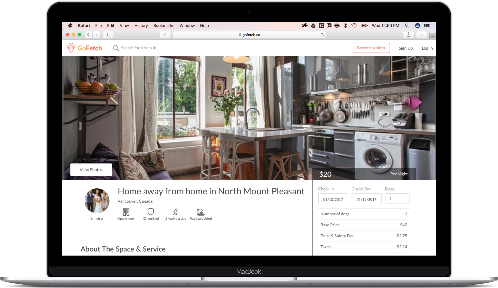
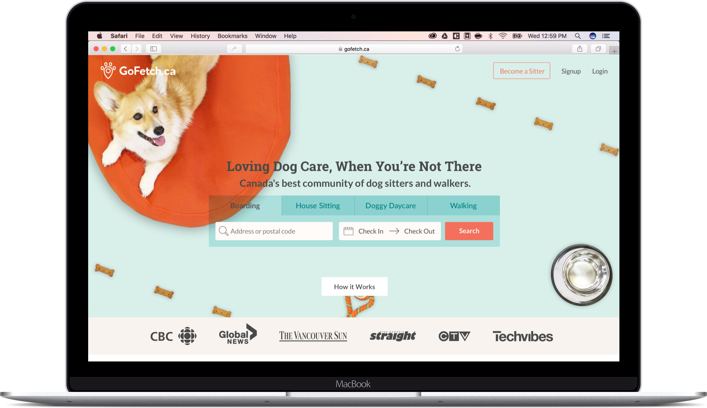
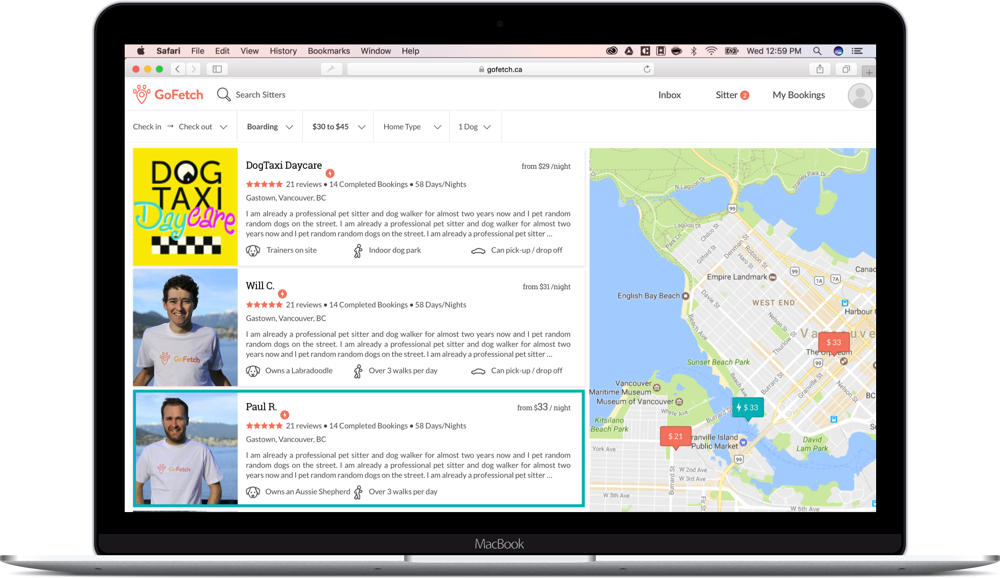

Challenge #1 Platform discrepancies
GoFetch.ca had launched originally as an iOS app that only offered dog walking. At the end of 2016, the cofounders decided to kick-start a larger online business offering peer to peer dog boarding by copying Airbnb’s circa 2016 website. Airbnb’s design is focused on showcasing interior spaces and the pet care domain knowledge did not map well to the service provider application process and profile pages.
The web platform did not use the same structure nor labels as the original iOS app creating confusion for users.
Initial iOS homepage offering only walking
Initial Website home page offering only boarding
Initial Website search page
Initial Website sitter page
Initial iOS and web sitemap comparizon
{kind=link}
The solution : branding and a design system
To establish a consistent brand experience and language, I created a brand and design system to be used across both platforms, iOS and Web.
New brand and design system
The solution : consistent information architecture and navigation
By mapping out the information architecture, the inconsistencies stood out. I leveraged this to redesign the GoFetch IOS application and website into their second version, to diversify the service offering and create a unified experience and set of offerings across all platforms. The different service offerings (walks, boarding, doggy daycare) are available as tabs in both platforms’ home page.
Redesigned Web homepage
Redesigned Web search page
Redesigned Sitter Dashboard

Redesigned iOS home and search component
{kind=link}
{kind=link}
{kind=link}
{kind=link}
{kind=link}
{kind=link}
{kind=link}
{kind=link}